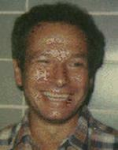

-
Anthony Bonner
interests: Genome mapping, logical inference, data mining.
-
Allan Borodin
interests: Computational complexity, analysis of algorithms, information retrieval.
-
Stephen Cook
interests: Computational complexity
-
Wayne Enright
interests: Numerical solution of ordinary differential equations, initial value problems, boundary value problems, algebraic differentical equations.
-
Eugene Fiume
interests: Computer graphics, geometric modeling.
-
Geoff Hinton
interests: Machine Learning
-
Radford Neal
interests: Bayesian inference, markov chain monte carlo, gene function classification, haplotype reconstruction, spectrometry, microarrays.
-
Charles Rackoff
interests: Computational complexity theory, origins of life, evolution, development.